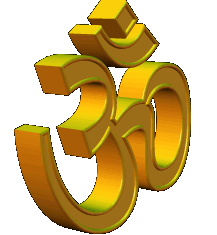

मन्त्र साधना, मन्त्र सिद्धि और
आध्यात्मिक मार्गदर्शन
वर्ष 2005 से मन्त्र साधना
और आध्यात्मिक मार्गदर्शन
मन्त्र, ध्यान और आध्यात्मिक अभ्यास को समझने
तथा जीवन में व्यवस्थित रूप से अपनाने के लिए
आधुनिक, व्यावहारिक और स्वयं के अभ्यास से
परखी गई विधियों पर आधारित मार्गदर्शन।
मार्गदर्शन के लिए कॉल करें 📞 9213816442
क्या आप आध्यात्मिक मार्गदर्शन चाहते हैं?
-
क्या मन में लगातार बेचैनी, तनाव या
अस्थिरता रहती है?
-
क्या किसी कार्य में बार-बार रुकावट
या देरी का अनुभव होता है?
-
क्या संबंध, विवाह या पारिवारिक जीवन
को लेकर चिंता रहती है?
-
क्या करियर या व्यवसाय को लेकर
दिशा स्पष्ट नहीं हो रही?
-
क्या मेहनत करने के बावजूद जीवन में
आगे बढ़ने का रास्ता स्पष्ट नहीं हो रहा?
-
क्या आप मन्त्र साधना शुरू करना चाहते हैं,
लेकिन सही विधि समझ नहीं आ रही?
-
क्या किसी विशेष उद्देश्य के लिए
मन्त्र साधना करना चाहते हैं?
-
क्या अपनी साधना को अधिक व्यवस्थित
और अनुशासित बनाना चाहते हैं?
सही मन्त्र, सही विधि, नियमित अभ्यास और
अनुशासन के साथ की गई साधना व्यक्ति को
अपने मन और जीवन के प्रति अधिक जागरूक
और केंद्रित होने में सहायता कर सकती है।
अक्षर मन्त्र तन्त्र यन्त्र
में आध्यात्मिक अभ्यास को डर या चमत्कार के
बजाय समझ, अनुशासन और व्यक्तिगत अनुभव के
दृष्टिकोण से समझने पर जोर दिया जाता है।
हमारी सेवाएँ
जीवन, संबंध, करियर, व्यवसाय और
आध्यात्मिक साधना से जुड़े विषयों पर
आपकी स्थिति के अनुसार व्यक्तिगत
आध्यात्मिक मार्गदर्शन।
उद्देश्य समस्या को समझकर उपयुक्त
साधना और आगे की दिशा पर मार्गदर्शन
देना है।
विशेष मन्त्र-साधना के लिए
जप की विधि, नियमित अभ्यास,
एकाग्रता और साधना के अनुशासन
से संबंधित व्यक्तिगत मार्गदर्शन।
साधना की प्रक्रिया को अधिक
व्यवस्थित और उद्देश्यपूर्ण
बनाने पर जोर दिया जाता है।
मन्त्र-साधना को सही विधि और
अनुशासन के साथ शुरू करने के लिए
व्यक्तिगत मार्गदर्शन।
मन्त्र, जप की विधि, साधना की
नियमितता और अभ्यास से जुड़े
आवश्यक विषयों को समझाया जाता है।
मन्त्र-जप और ध्यान के अभ्यास
के लिए स्फटिक माला का उपयोग,
जप की गिनती और नियमित साधना
से संबंधित मार्गदर्शन।
माला को अपनी नियमित साधना का
व्यवस्थित हिस्सा बनाने की जानकारी।
बीमारी या स्वास्थ्य संबंधी
कठिन परिस्थितियों में मानसिक
शांति, सकारात्मकता और आंतरिक
संतुलन के लिए मन्त्र और
आध्यात्मिक अभ्यासों के माध्यम
से सहायता।
कठिन समय में अपनी inner strength
पर काम करने के लिए आध्यात्मिक
मार्गदर्शन।
मेरे द्वारा लिखी गई पुस्तकों में
मन्त्र साधना, मन्त्र जाप, साधना
की विधि, अनुशासन और मन्त्र अभ्यास
से जुड़े विषयों को सरल और
व्यावहारिक तरीके से प्रस्तुत
किया गया है।
अक्षर मन्त्र तन्त्र यन्त्र को क्यों चुनें?
-
✔ वर्ष 2005 से मन्त्र और आध्यात्मिक
मार्गदर्शन का अनुभव
-
✔ व्यक्ति की स्थिति और आवश्यकता
के अनुसार व्यक्तिगत मार्गदर्शन
-
✔ आधुनिक और व्यावहारिक दृष्टिकोण
-
✔ स्वयं के अभ्यास और अनुभव से
परखी गई विधियों पर जोर
-
✔ डर और अतिरंजित दावों के बजाय
समझ और साधना पर ध्यान
-
✔ मन्त्र, ध्यान और अनुशासित
आध्यात्मिक अभ्यास को महत्व
आध्यात्मिक साधना को एक नए दृष्टिकोण से समझें
आध्यात्मिक साधना केवल मन्त्र का उच्चारण
करने तक सीमित नहीं है। सही विधि,
नियमित अभ्यास, एकाग्रता और अनुशासन
भी साधना का महत्वपूर्ण हिस्सा हैं।
मन्त्र और ध्यान का अभ्यास व्यक्ति को
अपने विचारों, भावनाओं और मन की स्थिति
को समझने तथा अपने भीतर अधिक जागरूकता
और स्थिरता विकसित करने की दिशा में
सहायता कर सकता है।
इसी उद्देश्य से
अक्षर मन्त्र तन्त्र यन्त्र
में मन्त्र साधना को सरल, व्यावहारिक
और अनुभव-आधारित तरीके से समझने पर
जोर दिया जाता है।
क्या आप मन्त्र साधना के लिए
मार्गदर्शन चाहते हैं?
मन्त्र साधना, मन्त्र दीक्षा,
मन्त्र सिद्धि, मन्त्र हीलिंग
या व्यक्तिगत आध्यात्मिक
मार्गदर्शन के लिए संपर्क करें।
परामर्श शुल्क: ₹5,000
संपर्क करें 📞 9213816442
Disclaimer:
आध्यात्मिक मार्गदर्शन सहायक spiritual
practice के रूप में है और medical या
psychological treatment का विकल्प नहीं है।